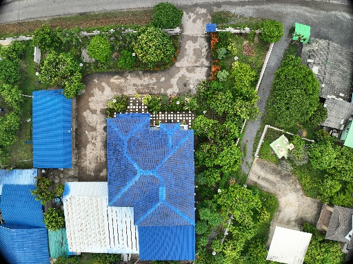

DJI_20260612134106_0001_V.JPG
RESOLUTION: 5280 x 3956 (20 MP)
GNSS: RTK FIXED (WGS 84 / UTM ZONE 47N)
DJI MAVIC 3 ENTERPRISE
สำรวจกระบวนการ Photogrammetry และแบบจำลองดิจิทัลของพื้นที่จริง ผ่านข้อมูลภาพถ่ายจากอากาศและการคำนวณเชิงเรขาคณิต
แตะหน้าจอเพื่อเริ่ม

Photogrammetry Processing Pipeline
เหมือนเวลาเราจะต่อของเล่น เราต้องเดินวนถ่ายรูปของเล่นรอบๆ ทุกด้าน เพื่อให้เห็นรายละเอียดครบทุกมุม ไม่มีมุมอับสายตา
คอมพิวเตอร์จะเปิดดูภาพทั้งหมด แล้วหาว่ามุมหลังคา หรือต้นไม้นี้ ไปโผล่อยู่ในรูปไหนอีกบ้าง เหมือนเล่นเกมจับคู่ภาพที่เหมือนกันเป๊ะๆ
พอกล้องหลายตัวเห็นจุดเดียวกัน ลำแสงจากกล้องจะยิงมาชนกันกลางอากาศ ทำให้คอมฯ รู้ทันทีว่าตึกตั้งอยู่ตรงไหน สูงเท่าไหร่ในโลกจริง
เหมือนเราเอาเม็ดทรายสีระยิบระยับ หรือตัวต่อเลโก้จิ๋วๆ นับล้านชิ้น มาโปรยเรียงต่อกันในอากาศ จนเห็นเป็นรูปร่างตึก ถนน และต้นไม้
ขั้นตอนสุดท้าย เอาภาพถ่ายจริงๆ มาแปะห่อรอบโครงตึก เหมือนห่อกล่องของขวัญ จนกลายเป็นโมเดล 3 มิติเสมือนจริงที่เอานิ้วหมุนดูเล่นได้เลย!
ความละเอียดภาพถ่ายบนพื้นดินจากความสูงบินและทางยาวโฟกัส
Difference of Gaussians Scale-Space & Fundamental Matrix
การปรับแก้บล็อกภาพด้วยสมการร่วมเส้นตรง (Non-linear Least Squares)
การหา Disparity Map พิกเซลต่อพิกเซลเพื่อสร้าง Point Cloud
การสร้างพื้นผิว 3D และขจัด Relief Displacement ($\Delta r = \frac{r \cdot h}{H}$)
ภาพถ่ายทางอากาศความละเอียด 20 ล้านพิกเซล (5280x3956) บันทึกข้อมูลตำแหน่งศูนย์กลางภาพด้วยระบบ RTK GNSS
เลือกหนึ่งใน 6 ขั้นตอน เพื่อดูว่าภาพถ่ายจากโดรนถูกเปลี่ยนเป็น Point Cloud และ 3D Mesh ได้อย่างไร
ภาพถ่าย 2 ใบต้องมองเห็นมุมตึกเดียวกัน ทำให้ลากเส้นลำแสงย้อนกลับจากเซ็นเซอร์กล้องได้
จุดที่ลำแสงจากกล้อง 2 ตัววิ่งมาตัดกันพอดีในอวกาศ คือพิกัดจริง 3 มิติ $(X, Y, Z)$ บนพื้นดิน
คอมพิวเตอร์ปรับสมดุลลำแสง 2,481 รูปพร้อมกัน จนคลาดเคลื่อนเฉลี่ยเหลือแค่ $\pm 1.7\text{ ซม.}$
RESOLUTION: 5280 x 3956 (20 MP)